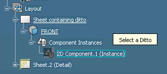
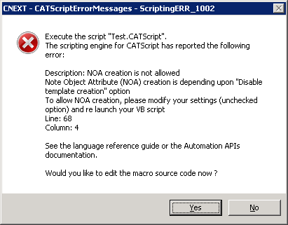
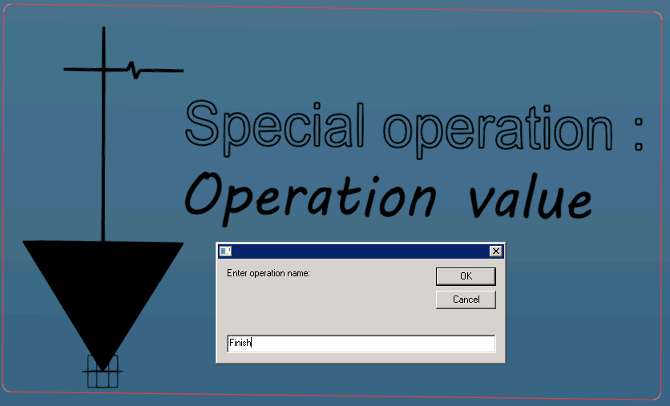
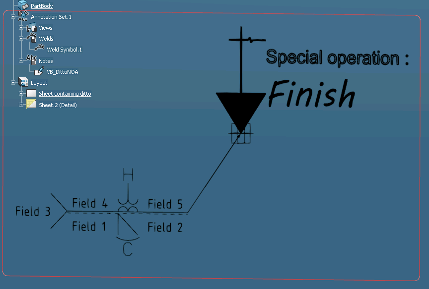

-
Selects the Ditto from the 2DLayout
Lets the user choose the Ditto component to constitute display of
the NOA entity
...
' Trigger the selection processing
Dim Status, InputObjectType(0)
InputObjectType(0) = "AnyObject"
Status = Selection.SelectElement( InputObjectType, "Select a Ditto", False)
If (Status = "Cancel") Then Exit Sub
' Retrieve the ditto
Dim oSelectionItem As SelectedElement
Set oSelectionItem = Selection.Item( 1 )
Dim oDitto As DrawingComponent
Set oDitto = oSelectionItem.Value
...
The figure (Fig.1) is illustrating how the selection is
taking place; notice that Ditto is directly picked from the Layout
specification tree under the "Component Instances" node
Fig.1: The selection of the Ditto Component
|
 |
-
Creates the Ditto NOA entity
Process to the NOA creation; this goes through the enumertaed
steps:
- Creates the Annotation Set based on the "ASME" Standard,
- Accesses to the AnnotationFactory2 from the Annotation Set,
- Creates a User Feature entity using a Reference generated
from the XY Plane of the Part,
- Invoke the method from the factory to create the NOA Ditto;
final argument is set to TRUE to specify that "Stick Ditto
perpendicular to geometry" option is required.
...
' Get the Part root feature
Dim oPart as Part
Set oPart = CATIA.ActiveEditor.ActiveObject
' Create a new ASME Annotation Set
Dim oAnnotationSets As Collection
Set oAnnotationSets = oPart.AnnotationSets
Dim oAnnotationSet as AnnotationSet
Set oAnnotationSet = oAnnotationSets.Add("ASME")
' Retrieve the factory
Dim oFactory as AnnotationFactory2
Set oFactory = oAnnotationSet.AnnotationFactory2
' Create a reference on the XY Plane of the Part
Dim oReferenceOnXYPlane as Reference
Set oReferenceOnXYPlane = oPart.CreateReferenceFromObject( oPart.OriginElements.PlaneXY )
' Make the user surface corresponding to this reference
Dim oUserSurface As UserSurface
Set oUserSurface = oPart.UserSurfaces.Generate( oReferenceOnXYPlane )
' Create the NOA Ditto with option "Stick Ditto perpendicular to geometry"
Dim oNewDittoNOA as Annotation2
Set oNewDittoNOA = oFactory.CreateDittoNOA( oUserSurface, "VB_DittoNOA", oDitto , TRUE )
...
In case of wrong setting environment, macro execution is stopped
by the error panel displayed by (Fig.2)
Fig.2: The Error raised consequent to wrong option activation.
|
 |
-
Provide a text content to be placed in the Ditto instance
Drawing Ditto Annotation composing the NOA
representation is accessible using the GetDitto method; next lines
are demonstrating how InputBox is employed to
request text used to supersede Ditto modifiable text.
Fig.3: Input Box for text replacement in Ditto.
|
 |
...
' Retrieve the ditto as component of this newly created NOA
Dim o2DComponentInNOA As DrawingComponent
Set o2DComponentInNOA = oNewDittoNOA.Noa.GetDitto( )
' Retrieve the modifiable text of the ditto
Dim oText As DrawingText
Set oText = o2DComponentInNOA.GetModifiableObject( 1 )
' Modify the modifiable text value
Dim ReturnValue As String
ReturnValue = InputBox( "Enter operation name: ", "", "New Value For Text")
oText.Text = ReturnValue
...
The Drawing Component object is employed in the rest of this script to
modify the scale and the annotation orientation.
-
Creates the Weld feature
...
' Create a new Weld feature
Dim oNewWeld As Annotation2
Set oNewWeld = oFactory.CreateWeld( oUserSurface )
...
The CreateWeld method returns a nude Weld entity as Annotation2
object.
-
Retrieves the 2D Annotation to adjust some characteristics
...
' Change Weld content
Dim oWeldingVisu As DrawingWelding
Set oWeldingVisu = oNewWeld.Weld.Get2DAnnot
...
Then, apply some changes to the Drawing Weld to modify its
visualization.
...
oWeldingVisu.GetTextRange( catWeldingFieldOne ).Text = "Field 1"
oWeldingVisu.GetTextRange( catWeldingFieldTwo ).Text = "Field 2"
oWeldingVisu.GetTextRange( catWeldingFieldThree ).Text = "Field 3"
oWeldingVisu.GetTextRange( catWeldingFieldFour ).Text = "Field 4"
oWeldingVisu.GetTextRange( catWeldingFieldFive ).Text = "Field 5"
oWeldingVisu.GetTextRange( catWeldingFieldSix ).Text = "Field 6"
oWeldingVisu.GetTextRange( catWeldingFieldSeven ).Text = "Field 7"
oWeldingVisu.SetSymbol catHVGrooveWelding, catFirstWelding
oWeldingVisu.SetSymbol catRechargWelding, catSecondWelding
oWeldingVisu.SetAdditionalSymbol catConvexWelding, catFirstWelding
oWeldingVisu.SetAdditionalSymbol catSmoothWelding, catSecondWelding
oWeldingVisu.SetFinishSymbol catDftLetterCWelding, catFirstWelding
oWeldingVisu.SetFinishSymbol catDftLetterHWelding, catSecondWelding
oWeldingVisu.IdentificationLineSide = catWeldingDown
oWeldingVisu.WeldingSide = catWeldingDown
oWeldingVisu.WeldingTail = catDftWeldingTailYES
' Apply new position
oWeldingVisu.x = -70.
oWeldingVisu.y = -30.
...
See the final result of this script execution (Fig.4).
Fig.4: The Script expected outcome.
|
 |